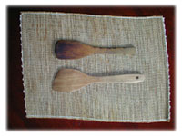
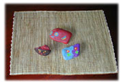

|
■「いやーん」
10年前のその日、合挽肉、玉ねぎ、にんにく、生姜、ピーマン、にんじん、チーズ、ヨーグルト、干しぶどう、生クリーム……、私は気のない風にドライカレーの材料をならべていた。なにを隠そう、そのころ私はおしなべてカレー料理が好きでなかった。子どものころ、取り柄がほかになかったせいだと思うが、「好き嫌いはない」という一点にこだわっていたので、カレーライスだってカレーうどんだって残さず食べたが、どうしてもうれしがれなかった。友だちの家に遊びに行き、ごはんをご馳走になるという場面で必ずといってもいいくらい「カレーライス」が出てきたのには、まいった。ほんとにまいった。大人になってからも、だからカレー料理をすすんでこしらえるなんてことはなかった。
私がカレーを好きじゃないことを知っている料理上手の友人が、ときどきレシピを送ってくれた。この日も、「だまされたと思って、このドライカレー、つくってみて。お嬢さんたちが喜ぶこと受け合いだけど、これならあなたも好きになるかも」という手紙のついたレシピを台所の壁にたてかけていた。
みじん切りにしたにんにく、生姜を炒めはじめ、これまたみじんに切った玉ねぎを入れたあと、カレー粉を大さじにすりきり一杯加える。手にした木杓子でよくよく炒めようとしたそのとき。
「いやーん」と、声がした。不機嫌そうな含みのある、女の声だった。台所はおろか、家のなかには私のほか誰もいない。テレビではない、ラジオでもない。とすると、気のせいかしらね。木杓子を握りなおして、鍋のなかに入れる。
「いやーん」２度目ははっきりと、怒った声だった。
声の主は木杓子。鍋から出してまじまじとみつめると、木杓子は角ばった額をひねるようにして、「わからないひとね」と言った。彼女の言い分はこうだった。カレー料理のときには使わないでほしかった。なぜといって、色も匂いもしみ込んでしまうから。
勤めていた出版社の仲間と出かけた木曾路で、ひと目ぼれして買い求めたのが、この檜の木杓子だった。そうだったのか、わるいことしたなあ。
「もう手遅れだから、私をカレー料理専用の木杓子にしてちょうだい」 と、彼女は言った。これが道具の心意気というものらしい。私はすでに黄色いしみのできた木杓子をいっそう大切に扱うようになった。それからだ、私がカレー料理に目覚めたのは。彼女のために新しい道を拓きたかった。カレー料理は好きじゃないなんて、口が裂けても言えなかったのだ。
さて、ルーとスープをていねいにつくったカレーライスは美味しかった。アジアの食にくわしい友人の手ほどきで覚えたタイカレーにも、はまった。カレーの色に染まって、などと大まかなことを言っていたのも、実はカレー料理に欠かせないスパイス、ターメリックの黄色だということを知った。
その後、１本の木杓子を求めた。道具道がわかり、ということは先輩に対する礼もわきまえるそんなタイプを選ぼうと、慎重にさがし、少年のような木杓子にめぐり逢った。彼女より少し身の丈たかく、ひらべったい彼は檜、出身は吉野だ。彼がうちにやってきた日、木杓子２本をテーブルの上にならべて、私は知らん顔を決めこんだ。彼がどんな挨拶をし、彼女がどう応えたのか。それは誰にもわからないが、その後うちの台所では木杓子の役割分担がうまくいっている。カレー料理のときに先輩格の彼女が「やれやれ」なんてイヤミを言うことはなかったし、彼の方も気がねなく炒り豆腐や、練りみそ、炒めごはんに活躍している。

■おまけのレシピ
1 ドライカレー （４人分）
玉ねぎ２個（★）、にんじん１本（★）、しょうが大さじ２（★）、 にんにく２片（★）、 ピーマン５個（★）、合挽き60?、ローリエ１枚、干しぶどう大さじ５（粗みじん）、
カレー粉大さじ４、ソース大さじ２、塩、こしょう適宜、スープの素４個、 トマト水煮１缶（ざく切り）、ヨーグルト１カップ、チーズ適宜（小さめ角切り）、生クリーム60cc
★印はフードプロセッサーでみじんに刻む。
しょうが、にんにく、玉ねぎ、にんじん、ピーマンを炒める。
合挽きとローリエを入れ、炒める。
干しぶどう、カレー粉、ソース、塩、こしょう、スープの素を加える。 トマト、ヨーグルト、チーズを入れてしばらく煮て、最後に生クリームで味をなごませる。
2 鱈のカレーシチュー（４人分）
鱈（切り身）４切、塩こしょう少々、小麦粉適宜、サラダ油適宜、ブロッコリー適宜、バター大さじ２、玉ねぎ１個、にんにく１片、生姜１片、じゃがいも３個、セロリ適宜、にんじん１本、しいたけ４枚、カレー粉大さじ２、小麦粉大さじ４、スープ５〜６カップ、トマト１個（水煮でもよい）、トマトケチャップ大さじ２、塩こしょう適宜
ブロッコリーを茹でておく。
鱈に塩こしょうし、小麦粉をまぶして、両面を焼く。（鍋から取りだしておく）
鍋を熱しバターを入れて、みじん切りした玉ねぎ、にんにく、生姜を炒める。
じゃがいもとセロリ、にんじんは食べやすい小さめの乱切りに。しいたけは薄切り。
鍋にカレー粉と小麦粉を加えて、よく炒める。
スープ、トマトの水煮、トマトケチャップ、じゃがいも、セロリ、にんじんを入れる。
塩こしょうして味をととのえ、弱火で30分煮こむ。 鱈を鍋にもどして、３分ほど煮る。 茹でたブロッコリーをのせたスープ皿にもりつける。
3 魚やレバー料理にカレー粉を。
鰯を開いて、塩こしょうしたところに小麦粉とカレー粉をまぶして焼く。
レバーを炒めるとき、カレー粉をふり入れてブランデーやワインを加え、煮つめる。
こんなときにカレー粉を使うとだけで、臭みがぬけて美味しく食べられる。

|